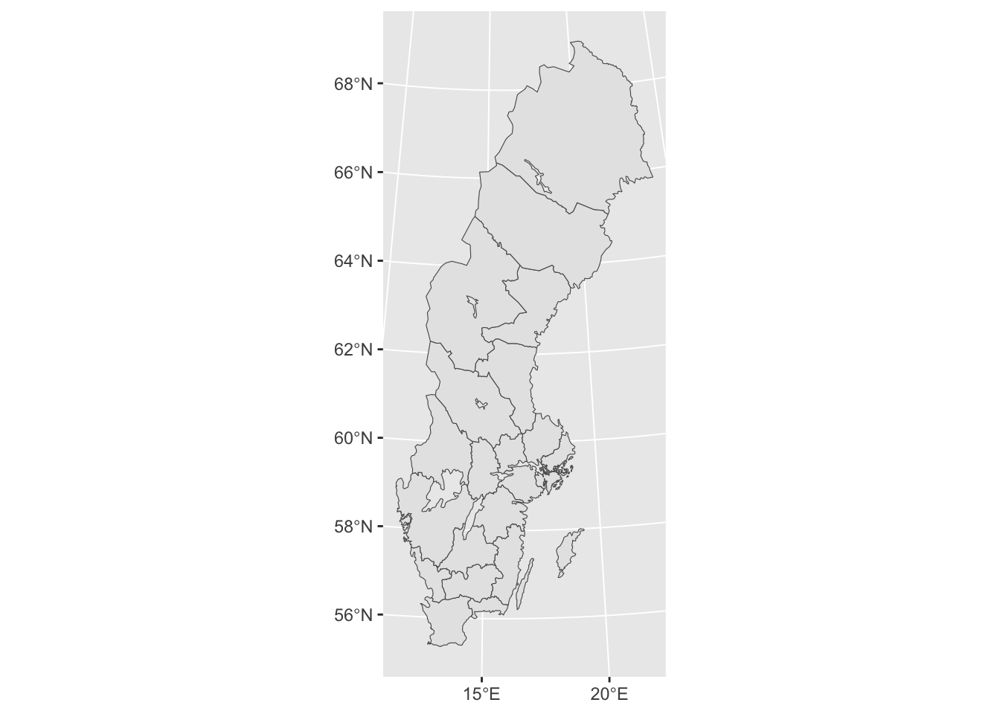
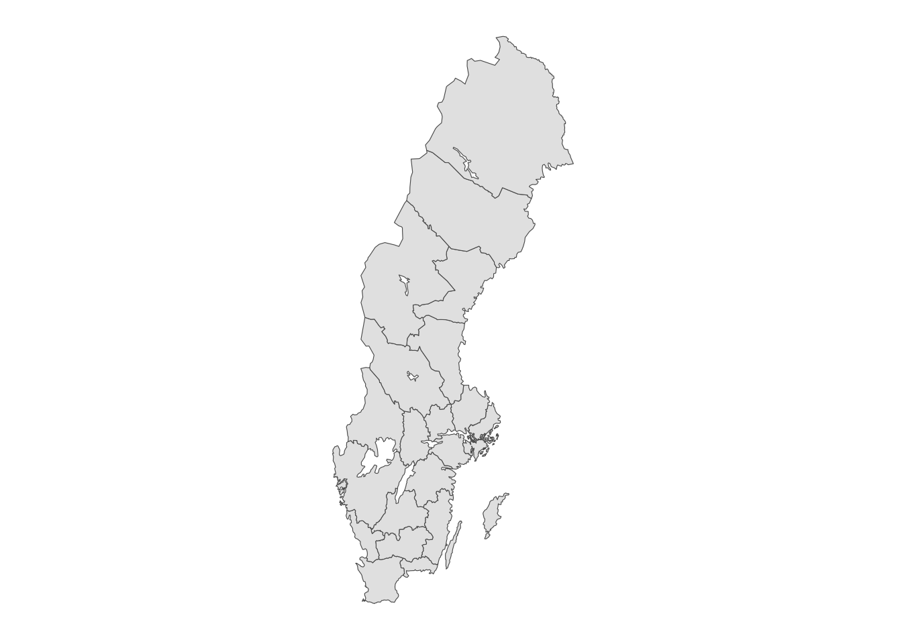
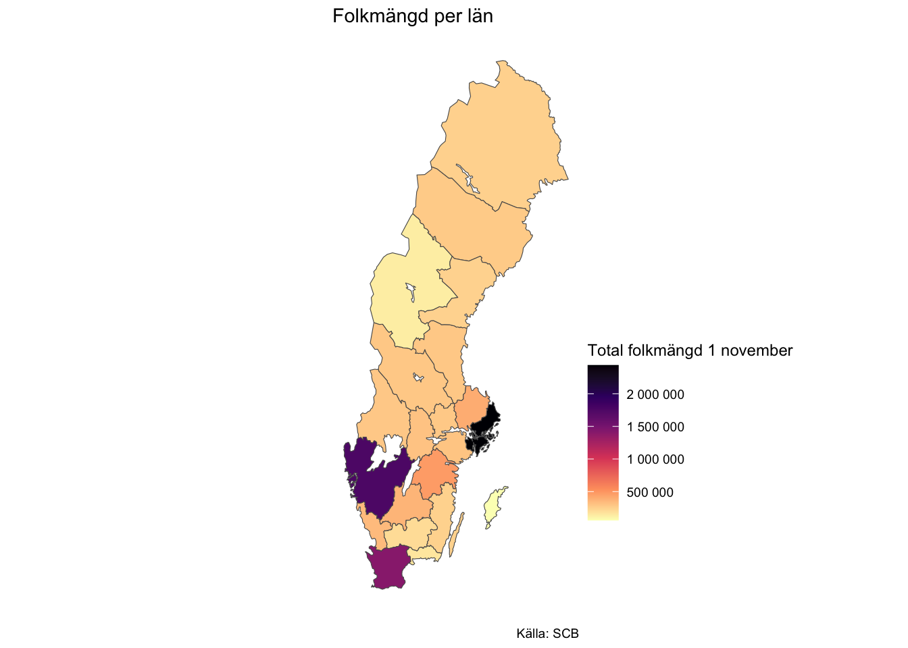

download.file("https://www.scb.se/contentassets/3443fea3fa6640f7a57ea15d9a372d33/shape_svenska.zip", destfile = "shape_svenska.zip")
unzip("shape_svenska.zip", exdir = "shape_svenska")
unzip("shape_svenska/LanRT90.zip", exdir = "lan_rt90")Geografiska informationssystem eller GIS är ett stort område inom dataanalys som traditionellt endast varit möjligt i mjukvaruprogram med höga licenskostnader. Men med den senaste tidens explosion av mjukvara som är Open Source är det idag möjligt att göra minst lika avancerade analyser helt kostnadsfritt. Här tänkte jag visa hur vi kan använda paket i R för att göra GIS.
Vi utgår från kartdata från SCB, som ni hittar här. Dessa filer finns inbygga i paketet swemaps2. Men om du vill läsa in dessa filer laddar du först ner dem som zip-filer och unzippa.
Då får vi dessa filer i mappen lan_rt90.
list.files("lan_rt90")[1] "Lan_RT90_region.dbf" "Lan_RT90_region.prj" "Lan_RT90_region.shp"
[4] "Lan_RT90_region.shx"Viktigt att notera är att du behöver alla filer i mappen för att ladda in geografisk data till R. Men du behöver bara ladda in en av filerna, nämligen den som är Shape (.shp).
För att läsa in och bearbeta kartfiler använder vi paktet sf(Simple Features) som gör det enkelt att läsa in och manipulera kartfiler.
Vi laddar in shape-filen med read_sf() och ser då att varje län har en geometry, en multipolygon, som är gränserna för länet.
library(sf)Linking to GEOS 3.10.2, GDAL 3.4.2, PROJ 8.2.1; sf_use_s2() is TRUElan <- read_sf("lan_rt90/Lan_RT90_region.shp")
lanSimple feature collection with 21 features and 2 fields
Geometry type: MULTIPOLYGON
Dimension: XY
Bounding box: xmin: 1230810 ymin: 6137234 xmax: 1880916 ymax: 7669583
Projected CRS: RT90 2.5 gon V
# A tibble: 21 × 3
LnKod LnNamn geometry
<chr> <chr> <MULTIPOLYGON [m]>
1 01 Stockholms (((1581896 6569894, 1584367 6572819, 1585410 6571048, 15…
2 03 Uppsala (((1588105 6611272, 1587491 6610219, 1591541 6601881, 15…
3 04 Södermanlands (((1508793 6538144, 1503218 6541877, 1502168 6544820, 14…
4 05 Östergötlands (((1448643 6445587, 1446285 6441023, 1438051 6439351, 14…
5 06 Jönköpings (((1451287 6423652, 1452508 6419347, 1456711 6414227, 14…
6 07 Kronobergs (((1455396 6340554, 1456478 6342310, 1460661 6342030, 14…
7 08 Kalmar (((1495818 6327165, 1491423 6329015, 1489201 6333906, 14…
8 09 Gotlands (((1658877 6415526, 1662237 6416751, 1664956 6417647, 16…
9 10 Blekinge (((1423434 6230844, 1422094 6233619, 1418608 6233013, 14…
10 12 Skåne (((1370410 6257557, 1375642 6259726, 1380641 6259554, 13…
# … with 11 more rowsFör att visualisera det här krävs inget mer än att använda ggplot2 tillsammans med geom_sf() på data.
library(tidyverse)
ggplot(lan) +
geom_sf()
Med geom_sf() får vi ett koordinatsystem med longitude och latitude, men vill vi bara ha en “clean” karta kan vi exempelvis använda theme_map() från paketet ggthemes.
library(ggthemes)
ggplot(lan) +
geom_sf() +
theme_map()
I längden vill vi dock fylla den här kartan med någon slags information. Vi vänder oss då till SCB med paketet pxweb, som är ett paket för att hämta data från SCB direkt till R. Koden nedan är i huvudsak genererad från funktionen pxweb_interactive(), som vi använt för att interaktivt prata med SCB:s API. Nedan har jag tagit ner data för antalet personer eftergymnasial utbildning per län samt befolkning, för att kunna visualisera andelen i regionen med eftergymnasial utbildning.
Är du intresserad av hur man hämtar data från SCB till R har jag skrivit ett inlägg om det här. Är du inte intresserad av hur vi hämtar data kan du bara hoppa över det här kodblocket.
library(pxweb)
library(janitor)
pxweb_query_list <- list(
"Region"= lan$LnKod, ## Här använder jag länskoder från shape-filen för att få ner alla län
"Kon"=c("1","2"),
"ContentsCode"=c("000000I2"),
"Tid"=c("2019"))
pxweb_query_list <-
list("Region"= lan$LnKod,
"Alder"=c("tot"),
"Kon"=c("1","2"),
"ContentsCode"=c("BE0101A9"),
"Tid"=c("2022"))
# Download data
px_data <-
pxweb_get(url = "https://api.scb.se/OV0104/v1/doris/sv/ssd/BE/BE0101/BE0101A/FolkmangdNov",
query = pxweb_query_list)
# Convert to data.frame
px_data_frame <- as.data.frame(px_data, column.name.type = "text", variable.value.type = "text")
## Vi är bara ute efter att visualisera totalen per region, inte på åldersnivå, därför summerar jag per region
px_data_clean <- px_data_frame %>%
janitor::clean_names() %>%
group_by(region) %>%
summarise(folkmangd_2022 = sum(folkmangden_den_1_november))Nu har vi data som vi kan joina på vår geografiska data. Ett problem är dock att vi i data från SCB:s API inte fått med länskoder. Det löser jag genom att rensa bort strängen " län" med str_replace(). Formatetet på länsnamn är då detsamma och vi kan joina på den geografiska information och visualisera andel personer med eftergymnasial utbildning per län.
px_data_geo <- px_data_clean %>%
mutate(region = str_replace(region, " län", "")) %>%
left_join(lan, by = c("region" = "LnNamn"))Nu kan vi visualisera resultatet:
ggplot(px_data_geo, aes(fill = folkmangd_2022)) +
geom_sf(aes(geometry = geometry)) +
theme_map() +
theme(legend.position = c(1, 0.15)) +
scale_fill_viridis_c(option = "magma",
labels = scales::number_format(accuracy = 1),
direction = -1) +
labs(
title = "Folkmängd per län",
caption = "Källa: SCB",
fill = "Total folkmängd 1 november"
)
Visualiseringen kan vi sedan spara som en png-fil.
ggsave("scb-karta-eftergymn.png")